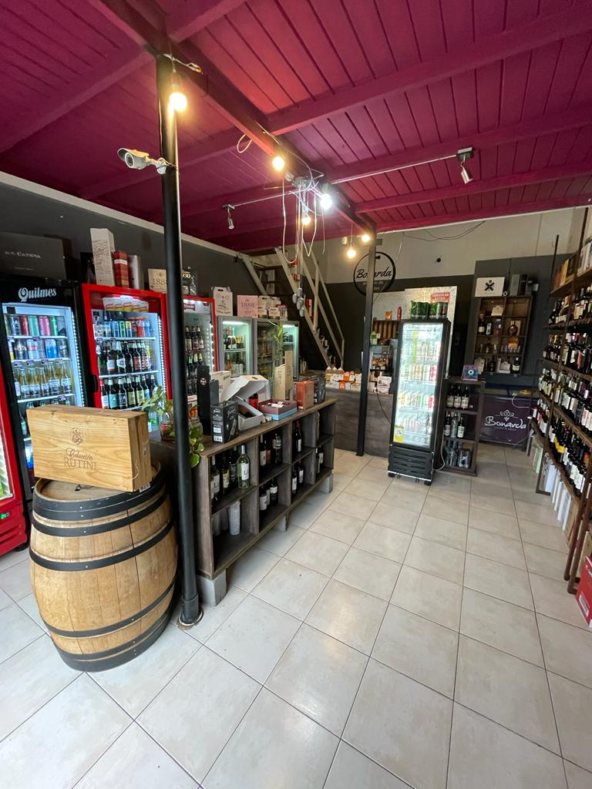

NOSOTROS
A principios del 2022, Alvaro decidió tomar un nuevo rumbo en su vida. Mientras cursaba la etapa final de la carrera de abogacia, supo que era el momento indicado para iniciarse en el negocio que desde un primer momento capturó su curiosidad. Es un gran conocedor de vinos y gran admirador de bodegas. Bonarda tiene una gran variedad de vinos mendocinos, de valle de uco, como así de bodegas boutique del resto del país.
Tambíen hay una importante inversión en distintas marcas de Gin, cuya popularidad ha crecido en el último tiempos siendo una bebida muy solicitada por todas las generaciones. A su vez podemos observar la gran cantidad de cervezas de industria nacional como aquellas importadas de gran nombre dentro del mercado cervecero.
Una iniciativa que se ha implementado recientemente es realizar mensualmente una Cata o también llamada degustación de vinos para todos los clientes y conocidos de Bonarda.
